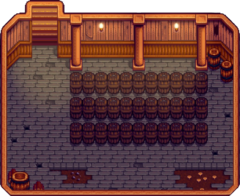

Parasztház

|
Hiányos fordítás Ezt a cikket vagy szakaszt nem fordították le teljesen magyarra. Üdvözlünk az oldal fordításával. |
| Parasztház | |
.png) | |
 | |
| Zárva: | Soha |
| Cím: | The Farm |
The Farmhouse is the player's permanent residence in Stardew Valley. Initially, it has only one small room that contains a single bed, a fireplace, an old TV (either a Budget TV or Floor TV), various decorations depending on what farm style was chosen, and a floor mat of varying design, which can all be changed and expanded later on. The outer footprint of the farmhouse is a 6x9 rectangle. The fireplace can be moved by left-clicking or turned on by right-clicking on it.
Flooring and Wallpaper can be changed using patterns bought from Pierre's or JojaMart. New furniture (including fireplaces) can be added at any time.
Upgrades can be bought at the ácsműhely. Each new room added when upgrading can have its own flooring and wallpaper patterns.
Upon getting married or having Krobus move in as a roommate, the game automatically adds an extra room that is based on that character's style.
Beltér
.png/180px-House_indoors_(tier_1).png)


Fejlesztések
Robin három nap alatt csinál meg egy-egy farmház fejlesztést. A házbővítések azonnal megtörténnek. A bővítések a farmház második fejlesztése után elérhetők.
| Fejlsztés | Kívülről | Belülről | Ár | Változás |
|---|---|---|---|---|
| 1 | .png)
|
.png/240px-House_indoors_(tier_2).png)
|
|
Egy konyhát ad hozzá, konyhapulttal, amely lehetővé teszi a főzést, és egy ládaként funkcionáló hűtőszekrényt. A hűtőben lévő tárgyakat főzés közben is használhatjuk, akkor is, ha nincsenek a játékos tárgymenüjében. Hozzáad egy hálószobát is. Egyszemélyesről kétszemélyessé bővűl az ágy. Lehetővé teszi házasságot. |
| 2 | .png)
|
.png/240px-House_indoors_(tier_3).png)
|
|
Két új szobával bővül, az egyik üres, a másikba egy kiságy és két Gyerekágy kerül, így a játékos vállalhat gyermeket. A konyha és a hálószoba megnagyobbodik. Feloldja a házbővítéseket és lehetővé teszi a ház festését. |
| 3 |
|
 | A ház alá pince kerül, ami a konyhán keresztül elérhető. A pincében fahordók vannak, aminek segítségével a sajt és a bor minőségét és az értékét növelni lehet. A pincében alapból 33 hordó található, de akár 189 hordó is elfér benne. |
Renovations
After upgrading the farmhouse all the way, Robin offers house renovations. Renovations are completed instantly. All renovations can be refunded in full amount at any time, provided that the expanded area isn't occupied. Refunds also complete instantly.
| Fejlesztés | Kép | Ár | Megjegyzés |
|---|---|---|---|
| Bölcső eltávolítása |  |
Ingyenes | Prevents player from having additional children |
| Hálószoba megnyitása |
 |
||
| Déli szoba hozzáadása |  |
||
| Sarokszoba hozzáadása |  |
||
| Sarokszoba bővítése |  |
||
| Padlás |  |
||
| Kis zug | |||
| Ebédlő |  |
||
| Ebédlő megnyitása |  |
Házastárs/szobatárs szobák
Vedd figyelembe, hogy Emily papagája annak nem látható többjátékos módban, aki nem látta a 4. szív eseményt.


Teljesítmények
Kettő Teljesítmény van a Tanyasi Házhoz kötődően.
- Fejlődés (Fejleszd a házat egyszer)
- A Nagybetűs Élet (Fejleszd a házat kétszer)
A Tanyasi Ház harmadik fejlesztése után már nem jár Teljesítmény (Ami a pincét adja hozzá).
Jegyzetek
- The magnifying glass icon over the woodpile at the left of the farmhouse is related to „A rejtélyes Qi” Quest.
- Instead of gathering 450 wood for the Farmhouse Upgrade 1, it can all be purchased at the ácsműhely during year 1 for
 4 500g, or during year 2+ for 22 500g. The total cost for the upgrade would then be 14 500g in year 1, or 32 500g in year 2+.
4 500g, or during year 2+ for 22 500g. The total cost for the upgrade would then be 14 500g in year 1, or 32 500g in year 2+.
Változástörténet
- 1.0: Introduced.
- 1.1: Added unique rooms for Shane and Emily when married. Introduced cellar house upgrade. Players can now apply wallpaper to hallways inside upgraded homes.
- 1.3.27: Hill-top and Wilderness farmhouses come with a Stone Fireplace instead of a Brick Fireplace. Fireplaces are now moveable furniture.
- 1.4: Added unique room for Krobus when he becomes the player's roommate.
- 1.5: Added the option to move beds. Added House Renovations.
| Épületek | ||
|---|---|---|
| Kereskedők | Ácsműhely • A Varázsló tornya • Jégkrémstand • Halbolt • Harvey klinikája • Hullócsillag szalon • JojaMart • Kalandorok céhe • Kaszinó • Kovács • Könyvkereskedő • Marnie tanyája • Oázis • Óriási tönk • Pierre boltja • Qi diós szobája • Romos ház • Sivatagi kereskedő • Szigeti kereskedő • Utazó szekér • Vulkáni törpe | |
| Házak | Elliott faháza • Faház • Folyó út 1 • Folyó út 2 • Fűzfa köz 1 • Fűzfa köz 2 • Hegyi út 24 • Lakókocsi • Leah kunyhója • Parasztház • Polgármester háza • Sátor | |
| Farm épületek | Gazdálkodás | Csűr • Halastó • Háziállat tálka • Istálló • Istálló (ló) • Kunyhó • Kút • Malom • Ragacsketrec • Raktár • Siló • Üvegház |
| Különleges | Arany óra • Farm obeliszk • Föld obeliszk • Junimo kunyhó • Sivatagi obeliszk • Sziget obeliszk • Víz obeliszk | |
| Egyéb | Boszorkány kunyhója • Fürdő • Joja raktárépület • Közösségi központ • Kutya karám • Mozi • Múzeum • Szigeti iroda | |